Hide Table of Contents
Hide Table of Contents
 Tutorials
About the API
Work with the API
Graphics and feature layers
Popups and Info Windows
Geoprocessor
Operations Dashboard
Create extensions
Mobile
ArcGIS Server Services
References
What's New archive
Tutorials
About the API
Work with the API
Graphics and feature layers
Popups and Info Windows
Geoprocessor
Operations Dashboard
Create extensions
Mobile
ArcGIS Server Services
References
What's New archive
The ArcGIS API for JavaScript Web Optimizer is a web application that generates custom builds of the ArcGIS API for JavaScript. The advantage of using a custom build is that your application downloads and parses only the required JavaScript resources which will make your application load faster.
- Introduction
- Prerequisites
- Generate a custom build
- Using a custom build
- Potential Performance Gains
- Accessing the build report
- FAQ and Common Errors
Introduction
The Web Optimizer offers an alternative to the "one-size fits all" builds that Esri offers via the
CDN
(js.arcgis.com/3.14/ and js.arcgis.com/3.14compact/) or as a download. This
works well for development of smaller web applications. But as applications grow in size and
functionality, this approach breaks down. When an application uses a large number of modules not
included in the available builds, applications generate more http requests, download more JavaScript and
take longer to load. A custom build combines the required modules which reduces the number of http
requests and application load time.
Once a custom build is created, it is available for download and can be hosted on your web server or cloud hosted and served via js.arcgis.com.
Prerequisites
- All code must use AMD-style require and define to load and create modules. Code that uses global references to Esri and/or Dojo modules is not supported.
- ArcGIS Online organization or ArcGIS for Developers account.
- JS API version 3.4 or later.
- Custom modules should define a package.json file that, at minimum, defines name and version properties.
Generate a custom build – Sign In
Use the button in the upper-right corner of the Web Optimizer application.
Sign in using either an ArcGIS Online organization account or an ArcGIS for Developers account. Trial developer accounts have full access to the app. Public ArcGIS Online accounts do not have access to the app. If signing in fails, please confirm that the account being used is either an ArcGIS Online organizational or ArcGIS for Developers account. If you continue to have trouble, please email us.
When signing in for the first time, you will not have any previous builds. To start a build, use the button.
Once an account has one or more custom builds, they are shown as a table with build date and status. Builds can be deleted or renamed here. An existing build can be used as the basis for a new build via the duplicate button. If a build has been published to the cloud, the URL for the build is also available here. Once a build is published to the cloud it cannot be renamed.
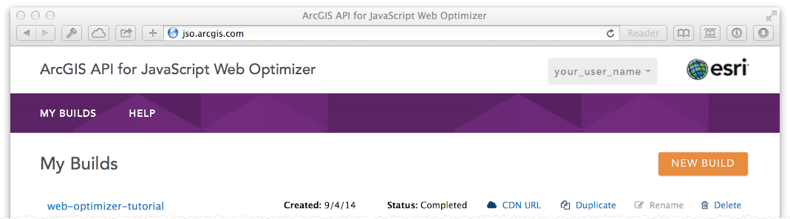Generate a custom build – Set up your build
There are four ways to specify the modules to include in a build:
- upload application in a
.zipfile - provide a URL to a publicly accessible application
- upload a text file with a list of modules
- manually select modules to include
All four methods require a build name to be specified.
Upload Zipped App
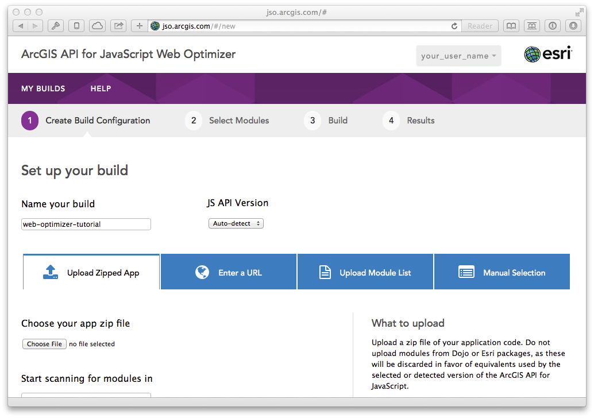Help is provided on the right side of the screen. When creating a build from a .zip file, the
.zip file
should be a zipped copy of an application. Any custom modules used by the application need to be
included in the .zip file. After specifying the .zip file via the "Choose File"
button, provide the name
of the .html or .js file that defines dojoConfig and tells the module
loader where to find custom
packages.
Note: When using the Web Optimizer, if you want your custom packages flattened into the single
built
layer
file you must choose the zip file option.
Custom package: Given the following directory structure:
application_folder
|- index.html
|-- css
|-- extraCustomModule
|---- package.json
|---- MyCustomModule.js
The package.json file would like like the following:
{
"name": "extraCustomModule",
"version": "0.0.1",
"description": "A custom module that provides awesome functionality."
}
The recommended selection for the "JS API version" drop-down is "Auto-detect" but it is possible to explicitly specify the version of the API to use for a build.
Note: Auto-detect is only applicable to pages referencing CDN URLs such as
http://js.arcgis.com/3.14.
If you are not referencing the ArcGIS API for JavaScript in your source code using a CDN URL, then just specify
the version your are targeting in the JS API Version drop-down.
Enter a URL
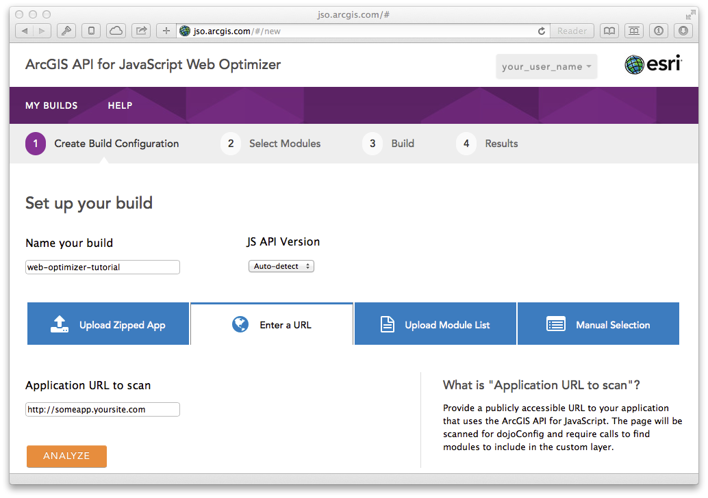Instead of uploading application code, provide a URL to a public application to crawl and determine modules to include in a build.
Upload Module List
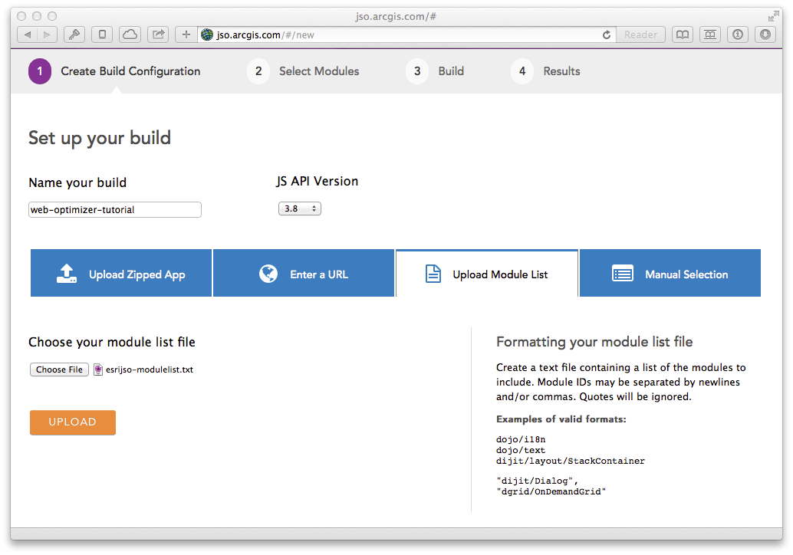An example of the format expected for a text file with a list of modules to include in a build is shown on the right. When using a module list, the API version must be set since there is no way to automatically detect it.
Manual Selection
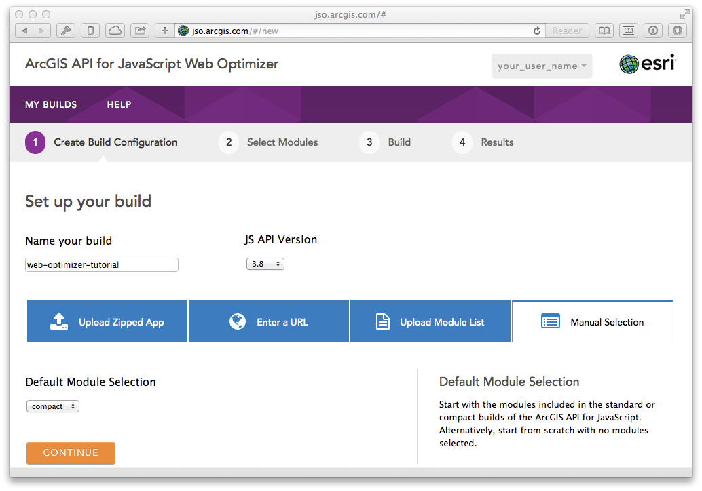The final option for specifying the modules included in a build is to manually select what to include. When using this method, in addition to an API version, a "Default Module Selection" is also required. Options are "compact", "standard" and "none". "Compact" and "standard" correspond to the modules included in the compact and standard builds available on the Esri CDN from js.arcgis.com.
Depending on the method selected, choose "Upload", "Analyze" or "Continue".
Generate a custom build – Select modules that will be included in bundled output
After supplying a group of modules to include in a build, the next step is to confirm all dependencies are found and optionally include additional modules. Double-check all desired modules are included and then select the button.
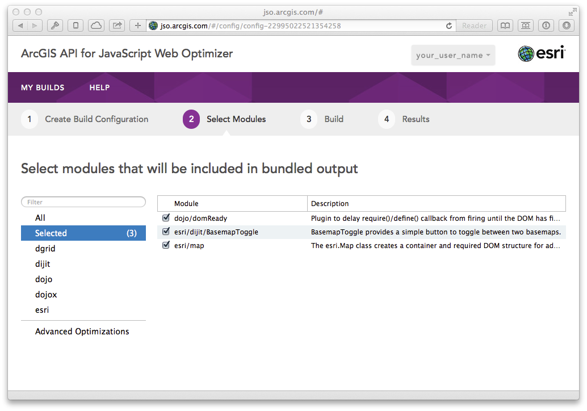"Select Modules" also includes an "Advanced Optimizations" section. More information on this section will be published in the near future.
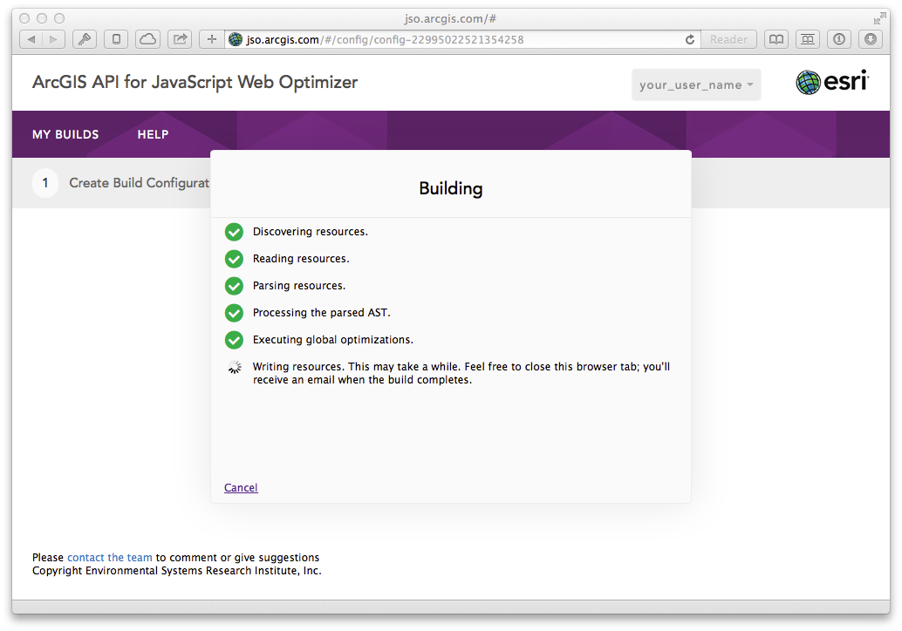Generating a custom build takes a couple of minutes. If numerous people are running builds, a request to generate a build might be queued. Regardless, it's usually best to close the browser tab and wait for the email notification that a build has finished.
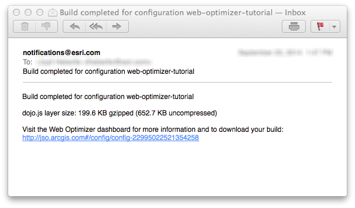Generate a custom build – Download or publish to cloud
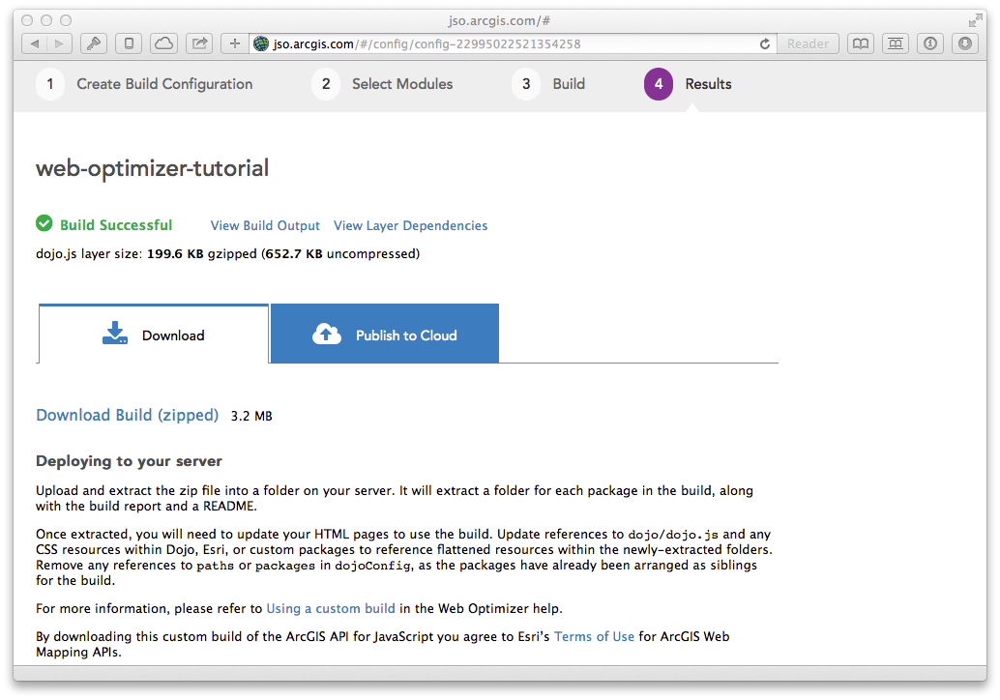Once a build successfully completes it is available for download. The "dojo.js layer size"
represents the
size of the file that includes all selected modules and is what applications using a custom build will
reference and download. The .zip file available for download includes all modules from the ArcGIS
API for JavaScript
as well as all Dojo packages (hence the increased size). All modules are included so that all Esri and
Dojo modules are available to apps using a custom build, although apps using a custom build should not
load modules not included in a build as that would defeat the purpose for using a custom build.
Optionally, builds can be CDN-hosted via the "Publish to Cloud" option. Organizational users can publish an unlimited number of builds but developer accounts are limited to publishing a single build. Once a build has been published, it can be used via a "CDN URL" which is available from the "My Builds" section of the Web Optimizer. Publishing a build takes a few minutes and a notification email is sent once a build is successfully published.
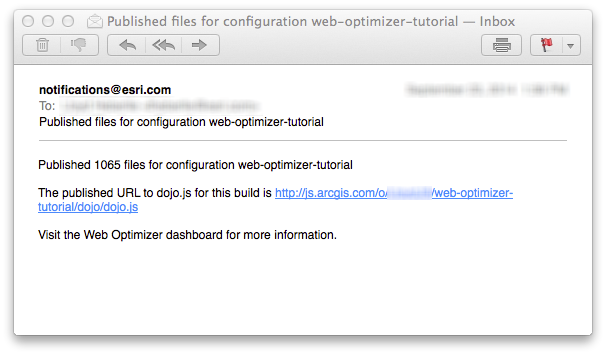Using a custom build
Note: At minimum, you will generally want to set the async config option to true as indicated below, in order for the Dojo loader to operate in asynchronous mode.
<script src="./web_optimizer/path/to/dojo/dojo.js" data-dojo-config="async: true"></script>
If you previously used the packages or paths configuration settings in development, they should not be necessary with this built release, as all packages have been arranged as siblings of the dojo package. If your web page or application references CSS resources within Dojo's, Esri's, or your own custom packages, you will also want to reference the respective flattened CSS resources in this built release instead.
Downloading a custom build and hosting it locally:
This tutorial assumes that you are installing the web-optimizer-tutorial build in the root of your web server (IIS inetpub\wwwroot) or (Apache htdocs) where myserver.fqdn.com is the domain name of your web site.
http://myserver.fqdn.com/web-optimizer-tutorial is the location where you have deployed your custom ArcGIS API for JavaScript build. The http://myserver.fqdn.com segment is the web server fully qualified domain name (FQDN) and web-optimizer-tutorial is the name of your custom build. For more information about web servers and virtual directories consult your web server's documentation or Information Technology department.
-Delete the code that looks like this.
+Add the code that looks like this.
<!doctype html> <html> <head> ... -<link rel="stylesheet" href="http://js.arcgis.com/3.14compact/esri/css/esri.css"> +<link rel="stylesheet" href="http://myserver.fqdn.com/web-optimizer-tutorial/esri/css/esri.css"> -<script> - var dojoConfig = { - packages: [ - { - name: "extraCustomModule", - location: location.pathname.replace(/\/[^/]+$/, "") + "extraCustomModule" - } - ], - async: true - }; -</script> -<script src="http://js.arcgis.com/3.14compact/init.js"></script> +<script src="http://myserver.fqdn.com/web-optimizer-tutorial/dojo/dojo.js" data-dojo-config="async: true"></script> <script> var map, customModule; require([ "esri/map", "extraCustomModule/MyCustomModule", "dojo/domReady!" ], function (Map, MyCustomModule) { map = new Map("mapDiv", { basemap: "streets", center: [-56.049, 38.485], zoom: 3 }); customModule = new MyCustomModule(); }); </script> </head> <body> ... <div id="mapDiv" style="width: 100%; height: 100%;"></div> ... </body> </html>
Using the "Publish to Cloud" option:
Note: Publishing Not Available for Custom Packages
If you attempt to "Publish to Cloud" when your custom build contains custom modules the following message will be displayed. "This build contains custom packages. Only builds limited to the packages within the ArcGIS API for JavaScript may be published."
Once your build has been published, obtain the CDN URL to your hosted build. The URL will be in the form of http://js.arcgis.com/o/your_user_name/web-optimizer-tutorial/dojo/dojo.js where the your_user_name is your ArcGIS Online organization or ArcGIS for Developers account username and the web-optimizer-tutorial is the build name.
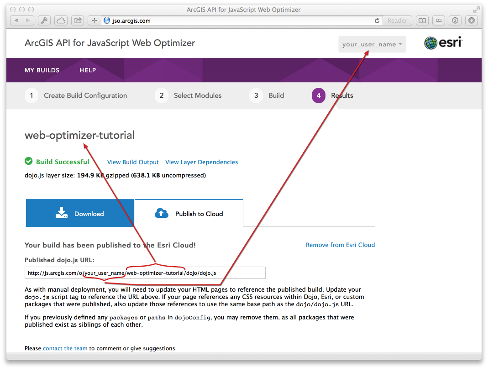You may also obtain the CDN URL from the main page in the My Builds table by clicking on the CDN URL link.
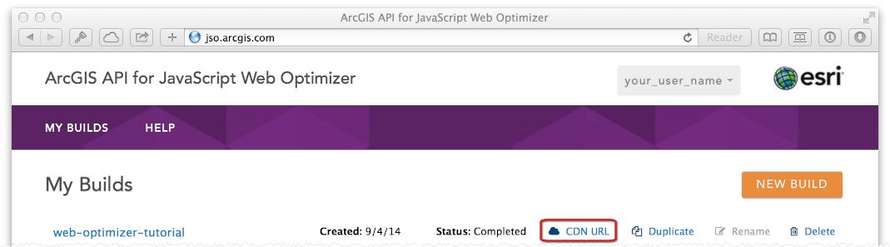See the following code sample below for modifications necessary to use the hosted build using the CDN URL.
-Delete the code that looks like this.
+Add the code that looks like this.
<!doctype html> <html> <head> ... -<link rel="stylesheet" href="http://js.arcgis.com/3.14compact/esri/css/esri.css"> +<link rel="stylesheet" href="http://js.arcgis.com/o/your_user_name/web-optimizer-tutorial/esri/css/esri.css"> -<script src="http://js.arcgis.com/3.14compact/init.js"></script> +<script src="http://js.arcgis.com/o/your_user_name/web-optimizer-tutorial/dojo/dojo.js" data-dojo-config="async: true"></script> <script> var map; require([ "esri/map", "dojo/domReady!" ], function (Map) { map = new Map("mapDiv", { basemap: "streets", center: [-56.049, 38.485], zoom: 3 }); }); </script> </head> <body> ... <div id="mapDiv" style="width: 100%; height: 100%;"></div> ... </body> </html>
Potential Performance Gains
Numbers in this table are for JS-only resources.
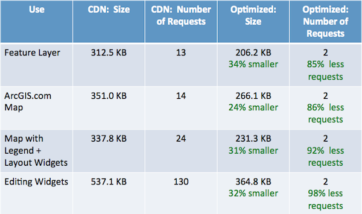Accessing the build report
During the build process, the optimization sequence occurs. Once a build is complete, a build report is available. One option to view the build report is once the build result is complete. Click the View Build Output link to see the Build Results.
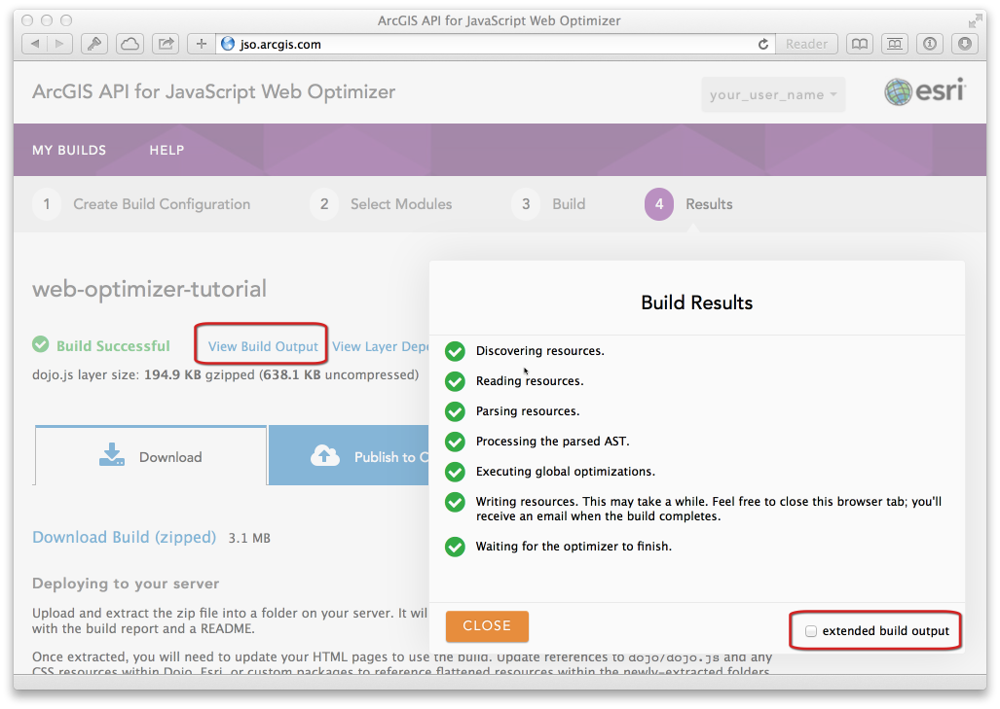In the Build Results panel, click the "extended build output" checkbox. This will display the build report in the Build Results panel.
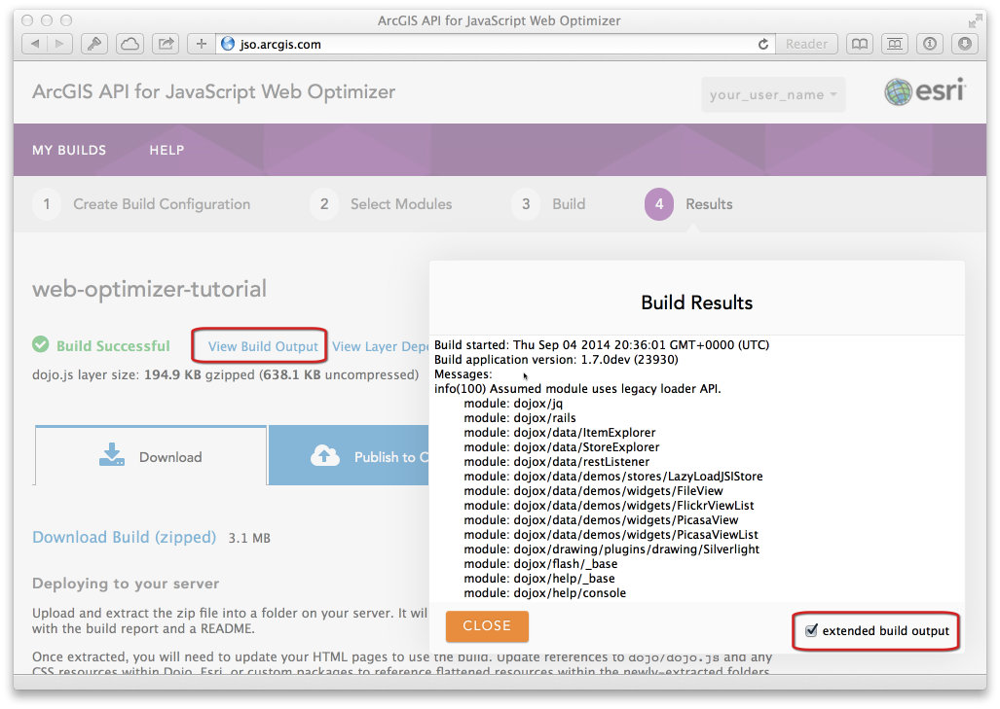There is another option to access the build report. When you choose the option to download your build locally by clicking on the Download Build (zipped) a build report is included in the download. See the graphic below for details.
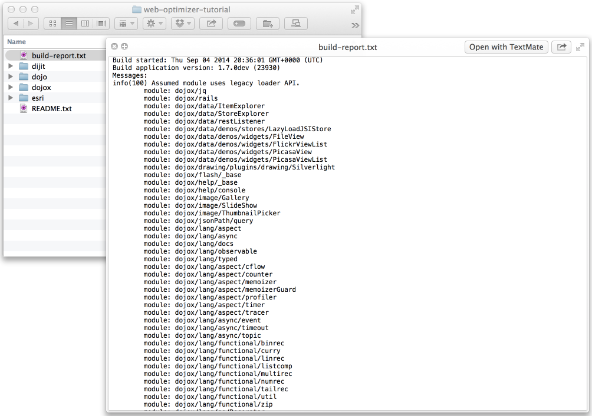FAQ and Common Errors
- What do the various build statuses mean?
- Draft: more information is required before a custom build can be generated.
- Building: a custom build is being built.
- Pending: build process completed but more input is required before it can be finalized.
- Completed: build finished and is available for download or can be published to the cloud.
- Publishing: files for the custom build are being copied to the cloud.
- Published: copy to the cloud has finished and the custom build is available via the js.arcgis.com CDN.
- What does "Build complete with possible errors" mean?
- Why is my build download several megabytes?
- How long are builds stored?
- Do custom builds require ArcGIS Online credits?
- Where can I obtain more information on Dojo configuration settings?
Build configurations can have a status of draft, building, pending, completed, publishing and published.
This means that the build finished, but there were warnings and/or errors that could prevent the
custom build from functioning as desired. The most common error is "Missing or empty
package.json."
which can be addressed by adding a
package.json
file for your custom modules. You can also safely ignore this error, but we recommend using a
package.json to avoid the habit of ignoring errors.
Selecting "Ignore Errors" will allow the app to continue and the build will be available to download so it can be tested.
The actual file you will use in your application is much smaller, usually on the order of 200 KB gzipped. The reason the build download is much larger is that additional CSS and image resources for various Dojo themes and components are always included in a build download so they are available. This provides greater flexibility when using custom, optimized builds.
Builds are stored on a server as long as the account that created it is active. Builds are deleted 30-60 days after an account is closed or expires.
No.
Please email us to submit requests for additions this FAQ.